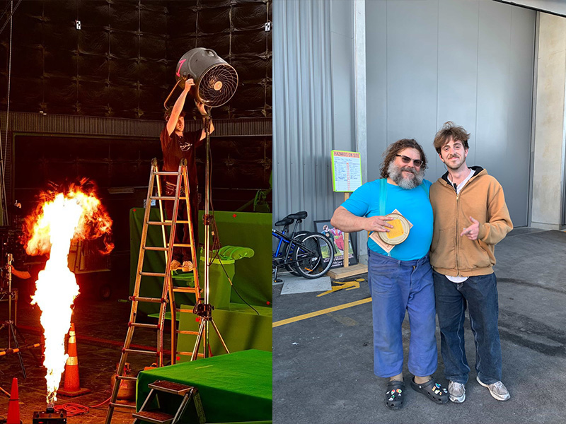

2025
SFX Runner / On-Set Assistant
I worked as SFX Runner and On-Set Assistant on the Minecraft feature film for six months, supporting the special effects team across both prep and shooting days. My role covered building rigs, sourcing materials under a fast-moving schedule, and providing on-set support during filming. Fast-paced, physical, and constantly changing.
IMDb ↗︎